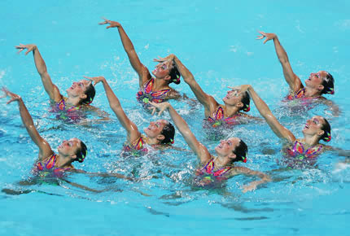

Facts About Archery:
Facts About Archery:
1. Archery is the art, sport, practice, or skill of using a bow to shoot arrows.
2. The word comes from the Latin arcus, meaning bow.
3. Historically, archery has been used for hunting and combat.
4. In modern times, it is mainly a competitive sport and recreational activity.
5. Arrows in archery competitions fly 2.5 times faster than a sprinting cheetah.
6. From the shooting line, the Olympic bull's-eye appears as small as a thumbtack held at arm's length.
7. Archery is more than three times safer than golf, with just 1 injury for every 2,000 participants.
8. Archery was the first Olympic sport to allow female competitors.

Facts About Synchronized Swimming:
1. Synchronized swimmers do not touch the bottom of the pool.
2. Synchronized swimming increases emotional and psychological health.
3. Synchronised swimmers can hear their performance music underwater through underwater speakers that are connected to the main sound system above the water.
4. The first synchronised swimming clubs are recorded to have started at around 1891 when it is thought the first competition took place in Berlin, Germany.
5. The synchronised swimming pool is 9 feet deep.
Back